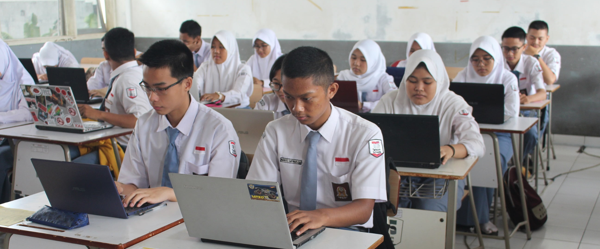
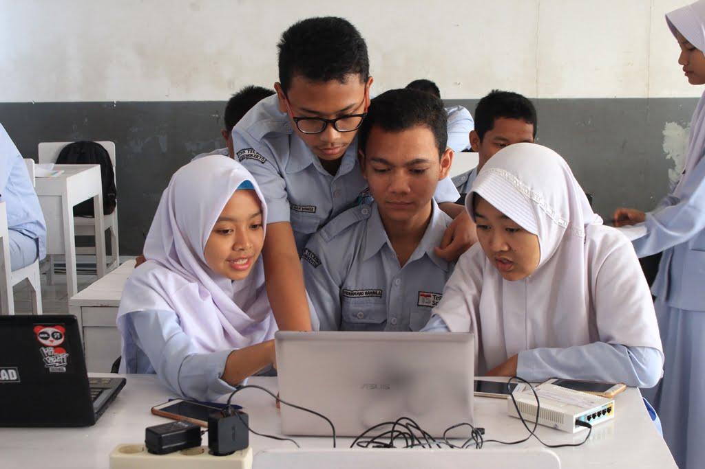

Stematel Creative Chalenge
SMK Telkom
Purwokerto
SCC adalah sebuah acara dalam rangka memberikan pengalaman kepada peserta didik untuk berbagi ilmu serta kreativitas terkait pembelajaran yang telah di peroleh di SMK Telkom Purwokerto.
Start Your Journey
Fashion Show

Cipta Baca Puisi

Zona Ekspresi
Learn More About
SMK Telkom Purwokerto
SMK Telkom Purwokerto merupakan pelopor Sekolah Menengah Kejuruan pertama di Indonesia bidang ITC di bawah naungan Yayasan Pendidikan Telkom. SMK Telkom Purwokerto beralamat di Jl. DI Panjaitan No.128, Karangreja, Purwokerto Kulon, Kecamatan Purwokerto Selatan, Kabupaten Banyumas, Jawa Tengah kode pos 53141.
Explore Maps

Explore
SMK Telkom Purwokerto
SMK Telkom Purwokerto memiliki dua program kejuruan yang keduanya berfokus pada pengetahuan dan pengembangan perangkat teknologi karena sekolah ini sendiri berbasis pada pemanfaatan IT, di mana sekolah memanfaatkan perangkat teknologi dan internet sebagai media dalam pembelajaran.
Program
SMK Telkom Purwokerto
.png)
Pengembangan Perangkat Lunak dan Gim
Jurusan ini mempelajari dan mendalami cara-cara mengembangkan perangkat lunak. Mulai dari
pembuatan, pemeliharaan, manajemen kualitas, dan manajemen organisasi pengembangan perangkat
lunak.
.png)
Teknik Jaringan Komputer dan Telekomunikasi
Jurusan ini mempelajari cara merakit komputer, mengenal dan mempelajari komponen hardware
dan software apa saja yang ada di dalam komputer, serta mempelajari jaringan
internet.
Pengembangan Gim
Jurusan ini mempelajari tentang bagaimana cara membuat sebuah game atau permainan sampai bisa dimainkan oleh banyak orang.
Tour
SMK Telkom Purwokerto
Di bawah ini merupakan salah satu project yang telah dibuat kakak kelas kami.
